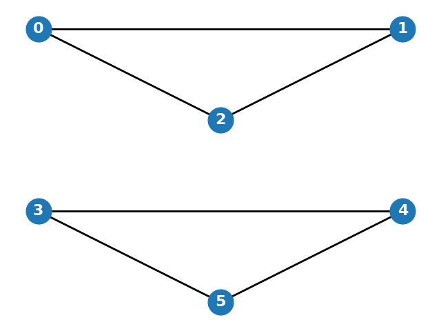

In a stochastic blockmodel (SBM), what does \( b_{i,j} \) represent?
In the symmetric stochastic blockmodel (SSBM), the second eigenvector of the expected Laplacian matrix \( L := \mathbb{E}[L] \) is given by:
Which of the following matrices encodes the block assignments in a stochastic blockmodel?
Which of the following statements about the eigenvalues of the expected Laplacian matrix \( L := \mathbb{E}[L] \) in the symmetric stochastic blockmodel (SSBM) is true?
Consider an Erdős-Rényi (ER) random graph with \( n \) vertices and edge probability \( p \). The expected number of edges in the graph is:
What is the expected number of triangles in an Erdős-Rényi random graph \( G(n, p) \)?
Consider the following Python code snippet:
import networkx as nx
import numpy as np
n = 5
p = 0.4
seed = 123
rng = np.random.default_rng(seed)
G = nx.Graph()
G.add_nodes_from(range(n))
for i in range(n):
for j in range(i + 1, n):
if rng.random() < p:
G.add_edge(i, j)
nx.draw(G, with_labels=True, node_size=500, font_size=12, font_color='white')Which of the following best describes the graph generated by this code?
Consider the following graph generated using NetworkX in Python:
Which of the following models could have produced this graph?
Which of the following is true for the spectral properties of a symmetric stochastic blockmodel (SSBM)?
In the stochastic blockmodel, what happens to the difficulty of recovering the community structure if the inter-block connection probability \( b_{1,2} \) is close to the intra-block connection probability \( b_{1,1} \)?